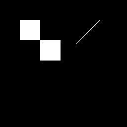

這一段在整個作業流程中的角色
這是整份程式最像 datapath optimization 的地方。把大乘法拆開，有助於 synthesis 與 timing。
如果你要在報告中解釋 timing 優化，這一頁可以當重點。因為 Otsu 涉及乘法、平方與 cross multiplication，所以特別拆成多狀態。
S_OTSU_INITS_OTSU_SCANbest_numbest_denotsu_t

algorithm pipeline enhanced
點擊可放大
timing area formula
點擊可放大
P1 mask
點擊可放大 S_OTSU_INIT: begin
wb_acc<=32'd0; sum_b_acc<=32'd0;
otsu_idx<=8'd0; otsu_t<=8'd0;
best_num<=130'd0; best_den<=64'd1;
state<=S_OTSU_SCAN;
end
// -----------------------------------------------
S_OTSU_SCAN: begin
// V19 stage 0: prepare histogram accumulators and first multiply.
// wb_next/sum_b_next are registered and reused in the following Otsu stages.
otsu_idx32 <= {24'd0, otsu_idx};
wb_next <= wb_acc + hist[otsu_idx];
sum_b_next <= sum_b_acc + ({24'd0, otsu_idx} * hist[otsu_idx]);
// lhs48 = sum_total * wb_next
otsu_mul_a <= {98'd0, sum_total};
otsu_mul_b <= {32'd0, (wb_acc + hist[otsu_idx])};
state <= S_OTSU_LHS;
end
S_OTSU_LHS: begin
lhs48 <= otsu_mul_y[63:0];
// rhs48 = sum_b_next * 65536 = sum_b_next << 16
rhs48 <= {16'd0, sum_b_next, 16'd0};
// denom32 = wb_next * (65536 - wb_next)
otsu_mul_a <= {98'd0, wb_next};
otsu_mul_b <= {32'd0, (32'd65536 - wb_next)};
state <= S_OTSU_DENOM;
end
S_OTSU_DENOM: begin
denom32 <= otsu_mul_y[63:0];
if (lhs48 >= rhs48) begin
diff48 <= {1'b0, (lhs48 - rhs48)};
otsu_mul_a <= {65'd0, (lhs48 - rhs48)};
otsu_mul_b <= (lhs48 - rhs48);
end else begin
diff48 <= {1'b0, (rhs48 - lhs48)};
otsu_mul_a <= {65'd0, (rhs48 - lhs48)};
otsu_mul_b <= (rhs48 - lhs48);
end
state <= S_OTSU_SQUARE;
end
S_OTSU_SQUARE: begin
square96 <= otsu_mul_y[129:0];
// cmp_lhs = square96 * best_den
otsu_mul_a <= otsu_mul_y[129:0];
otsu_mul_b <= best_den;
state <= S_OTSU_CMP1;
end
S_OTSU_CMP1: begin
cmp_lhs <= otsu_mul_y;
// cmp_rhs = best_num * denom32
otsu_mul_a <= best_num;
otsu_mul_b <= denom32;
state <= S_OTSU_CMP2;
end
S_OTSU_CMP2: begin
cmp_rhs <= otsu_mul_y;
if ((wb_next!=32'd0)&&(wb_next!=32'd65536)&&
(denom32!=64'd0)&&(cmp_lhs>otsu_mul_y)) begin
best_num<=square96; best_den<=denom32; otsu_t<=otsu_idx;
end
wb_acc <= wb_next;
sum_b_acc <= sum_b_next;
if (otsu_idx==8'd255) begin
addr_cnt<=16'd0; count_hi<=17'd0; otsu_idx<=8'd0;
state<=S_COUNT_HI;
end else begin
otsu_idx<=otsu_idx+8'd1;
state<=S_OTSU_SCAN;
end
end
// -----------------------------------------------
| Line | 原始程式碼 | 流程分類 | 中文說明 |
|---|---|---|---|
| 559 | S_OTSU_INIT: begin | 十、Otsu Thresholding | 進入狀態 S_OTSU_INIT：初始化 Otsu threshold 計算的累加器與最佳值。 |
| 560 | wb_acc<=32'd0; sum_b_acc<=32'd0; | 十、Otsu Thresholding | 非阻塞指定，在 clock 邊緣更新暫存器；屬於 十、Otsu Thresholding。 |
| 561 | otsu_idx<=8'd0; otsu_t<=8'd0; | 十、Otsu Thresholding | 非阻塞指定，在 clock 邊緣更新暫存器；屬於 十、Otsu Thresholding。 |
| 562 | best_num<=130'd0; best_den<=64'd1; | 十、Otsu Thresholding | 非阻塞指定，在 clock 邊緣更新暫存器；屬於 十、Otsu Thresholding。 |
| 563 | state<=S_OTSU_SCAN; | 十、Otsu Thresholding | 非阻塞指定，在 clock 邊緣更新暫存器；屬於 十、Otsu Thresholding。 |
| 564 | end | 十、Otsu Thresholding | 結束目前 begin-end 區塊。 |
| 565 | 十、Otsu Thresholding | 空白行，用來分隔段落，提升可讀性。 | |
| 566 | // ----------------------------------------------- | 十、Otsu Thresholding | 原始註解，用來說明此段設計目的或注意事項。 |
| 567 | S_OTSU_SCAN: begin | 十、Otsu Thresholding | 進入狀態 S_OTSU_SCAN：掃描 threshold candidate。 |
| 568 | // V19 stage 0: prepare histogram accumulators and first multiply. | 十、Otsu Thresholding | 原始註解，用來說明此段設計目的或注意事項。 |
| 569 | // wb_next/sum_b_next are registered and reused in the following Otsu stages. | 十、Otsu Thresholding | 原始註解，用來說明此段設計目的或注意事項。 |
| 570 | otsu_idx32 <= {24'd0, otsu_idx}; | 十、Otsu Thresholding | 非阻塞指定，在 clock 邊緣更新暫存器；屬於 十、Otsu Thresholding。 |
| 571 | wb_next <= wb_acc + hist[otsu_idx]; | 十、Otsu Thresholding | 非阻塞指定，在 clock 邊緣更新暫存器；屬於 十、Otsu Thresholding。 |
| 572 | sum_b_next <= sum_b_acc + ({24'd0, otsu_idx} * hist[otsu_idx]); | 十、Otsu Thresholding | 非阻塞指定，在 clock 邊緣更新暫存器；屬於 十、Otsu Thresholding。 |
| 573 | 十、Otsu Thresholding | 空白行，用來分隔段落，提升可讀性。 | |
| 574 | // lhs48 = sum_total * wb_next | 十、Otsu Thresholding | 原始註解，用來說明此段設計目的或注意事項。 |
| 575 | otsu_mul_a <= {98'd0, sum_total}; | 十、Otsu Thresholding | 非阻塞指定，在 clock 邊緣更新暫存器；屬於 十、Otsu Thresholding。 |
| 576 | otsu_mul_b <= {32'd0, (wb_acc + hist[otsu_idx])}; | 十、Otsu Thresholding | 非阻塞指定，在 clock 邊緣更新暫存器；屬於 十、Otsu Thresholding。 |
| 577 | state <= S_OTSU_LHS; | 十、Otsu Thresholding | 非阻塞指定，在 clock 邊緣更新暫存器；屬於 十、Otsu Thresholding。 |
| 578 | end | 十、Otsu Thresholding | 結束目前 begin-end 區塊。 |
| 579 | 十、Otsu Thresholding | 空白行，用來分隔段落，提升可讀性。 | |
| 580 | S_OTSU_LHS: begin | 十、Otsu Thresholding | 進入狀態 S_OTSU_LHS：計算 Otsu 比較式左側中間值。 |
| 581 | lhs48 <= otsu_mul_y[63:0]; | 十、Otsu Thresholding | 非阻塞指定，在 clock 邊緣更新暫存器；屬於 十、Otsu Thresholding。 |
| 582 | // rhs48 = sum_b_next * 65536 = sum_b_next << 16 | 十、Otsu Thresholding | 原始註解，用來說明此段設計目的或注意事項。 |
| 583 | rhs48 <= {16'd0, sum_b_next, 16'd0}; | 十、Otsu Thresholding | 非阻塞指定，在 clock 邊緣更新暫存器；屬於 十、Otsu Thresholding。 |
| 584 | // denom32 = wb_next * (65536 - wb_next) | 十、Otsu Thresholding | 原始註解，用來說明此段設計目的或注意事項。 |
| 585 | otsu_mul_a <= {98'd0, wb_next}; | 十、Otsu Thresholding | 非阻塞指定，在 clock 邊緣更新暫存器；屬於 十、Otsu Thresholding。 |
| 586 | otsu_mul_b <= {32'd0, (32'd65536 - wb_next)}; | 十、Otsu Thresholding | 非阻塞指定，在 clock 邊緣更新暫存器；屬於 十、Otsu Thresholding。 |
| 587 | state <= S_OTSU_DENOM; | 十、Otsu Thresholding | 非阻塞指定，在 clock 邊緣更新暫存器；屬於 十、Otsu Thresholding。 |
| 588 | end | 十、Otsu Thresholding | 結束目前 begin-end 區塊。 |
| 589 | 十、Otsu Thresholding | 空白行，用來分隔段落，提升可讀性。 | |
| 590 | S_OTSU_DENOM: begin | 十、Otsu Thresholding | 進入狀態 S_OTSU_DENOM：計算 Otsu 分母 wb × wf。 |
| 591 | denom32 <= otsu_mul_y[63:0]; | 十、Otsu Thresholding | 非阻塞指定，在 clock 邊緣更新暫存器；屬於 十、Otsu Thresholding。 |
| 592 | if (lhs48 >= rhs48) begin | 十、Otsu Thresholding | 條件判斷，用來控制 十、Otsu Thresholding 的流程分支、邊界條件或狀態轉移。 |
| 593 | diff48 <= {1'b0, (lhs48 - rhs48)}; | 十、Otsu Thresholding | 非阻塞指定，在 clock 邊緣更新暫存器；屬於 十、Otsu Thresholding。 |
| 594 | otsu_mul_a <= {65'd0, (lhs48 - rhs48)}; | 十、Otsu Thresholding | 非阻塞指定，在 clock 邊緣更新暫存器；屬於 十、Otsu Thresholding。 |
| 595 | otsu_mul_b <= (lhs48 - rhs48); | 十、Otsu Thresholding | 非阻塞指定，在 clock 邊緣更新暫存器；屬於 十、Otsu Thresholding。 |
若要看完整逐行內容，請進入「逐行說明」頁。
中文重點整理
- 程式位置：Lines 559–639
- 此段主要目標：把 Otsu 計算拆成多個 state：scan、lhs、denom、square、compare。
- 閱讀建議：先看相關圖檔，再看原始 code，最後看逐行說明示範。
- 對報告的幫助：這一頁的圖片與說明很適合直接當作一個報告子段落。